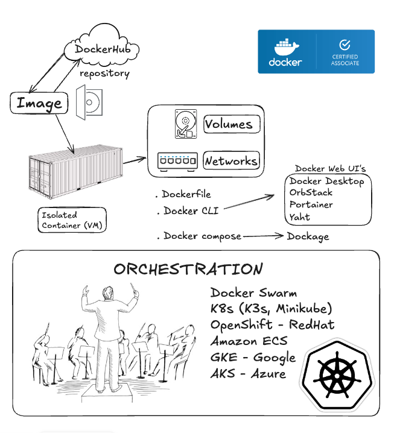
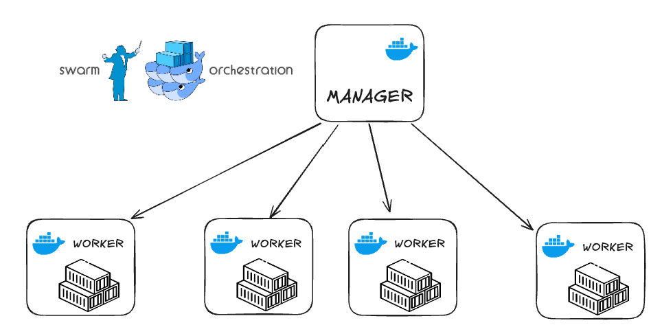
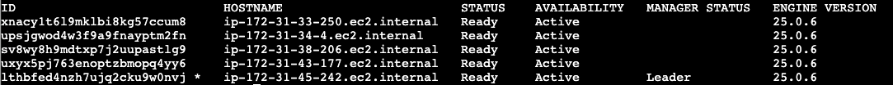
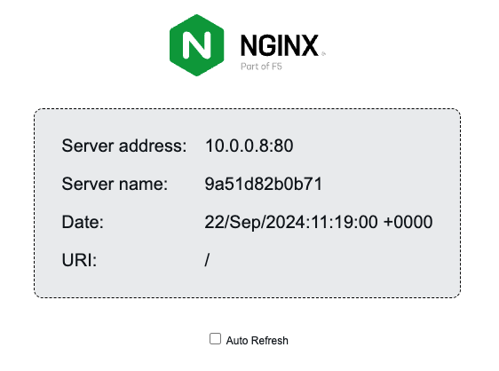
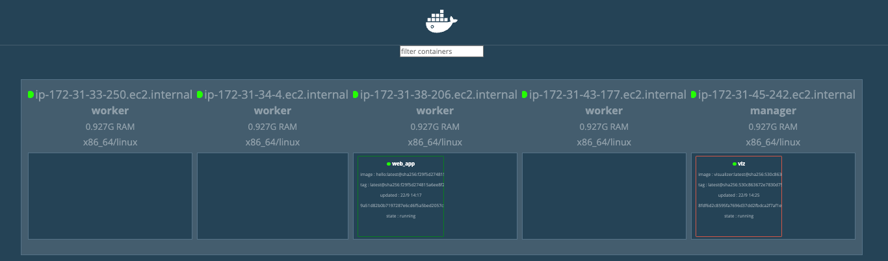
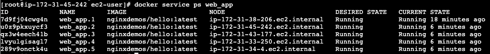
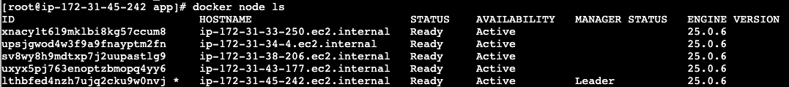
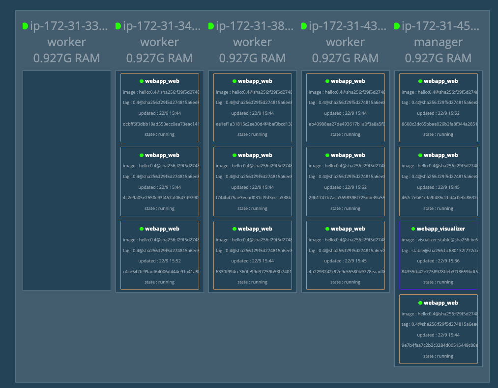

Предисловие
Данное видео основано на англоязычной версии которую любезно подготовил mr. Bob Cravens оставляю ссылку на его канал
Экзамен по докеру

В общем сейчас готовлюсь сдать экзамен по docker, стоит он 200$ и четверть вопросов в нем посвящено оркестрации контейнеров. (Исходя из этого документа) Готовлюсь я не спешно т.к. хочу изучить для себя все основательно. Уже успел посмотреть кучу курсов в интернете, благо их скопилось довольно много. Возмущает только то, что большая часть образовательных платформ (Udemy, LinkedIn) оккупирована коллегами из Индии, ничего личного не имею, однако их акцент мне лично сильно режет слух.
Что такое оркестрация?

У docker есть свой встроенный оркестратор — docker swarm, который также имеет встроенный балансировщик (в отличии от k8s). Такое решение прекрасно подойдет для какого-нибудь “пет” проекта либо для домашней лаборатории и если вы в начале пути изучения DevOps (как я). Данная лаба отлично описывает основы отказоустойчивости, мне она очень понравилась - делюсь с вами!Сегодня мы будем разворачивать кластер на aws. Посмотрим как это работает: создадим одну мастер ноду и пять воркеров, также посмотрим как можно использовать элементарный CI/CD короче погнали!
AWS
firewall rules
Так как вся работа у нас будет происходить исключительно с облачными серверами, нам понадобится только браузер. И первое с чего мы начнем на создадим правила фаервола на aws>ec2>secutity groups Согласно документации docker swarm нам понадобится открыть следующие порты:
- Port `2377` TCP for communication with and between manager nodes
- Port `7946` TCP/UDP for overlay network node discovery
- Port `4789` UDP (configurable) for overlay network traffic
- open ICMP 172.31.0.0/16
- Port `8080` TCP for docker visualizer
- Port '443' TCP - HTTPS
- Port '80' TCP - HTTP
deploy 5xEC2
Создадим сразу 5 виртуальных машин укажем в конце вот такой небольшой блок команд
#!/bin/bash
sudo yum update
sudo yum -y install docker
service docker start
usermod - a -G docker ec2-user
chkconfig docker on
pip3 install docker-compose
Переименуем swarm_manager & swarm_worker
Master node
Заявим мастер ноду на первой машине.
sudo su
docker swarm init --advertise-addr 172.31.45.242
Если все прошло успешно то система должна выдать что-то вроде такого
docker swarm join --token SWMTKN-1-tokenID 172.31.45.242:2377
add workers
Потом подключим все воркеры по очереди введя команду выше. Если все ок то по команде:
docker node ls
Должен отобразиться список активных нод:

Далее на нашей мастер ноде запустим команду:first app
docker service create --name web_app --replicas 1 --publish 80:80 nginxdemos/hello
Проверим:
docker service ls
Убедимся, что у нас есть активный контейнер который бежит на порту 80 Далее ввдем http://public-ip/ Если все ок, то получаем вот такую штуку:

visualizer
Далее идем по этой ссылке: копируем из инструкции следующий блок команд:
docker service create \
--name=viz \
--publish=8080:8080/tcp \
--constraint=node.role==manager \
--mount=type=bind,src=/var/run/docker.sock,dst=/var/run/docker.sock \
dockersamples/visualizer
Если все прошло хорошо, то на порту 8080 у нас должно быть, что то вроде такого:

Теперь давайте развернем наше приложение ‘web_app’ на все наши 5 нод:docker service scale web_app=5
вернемся нашему визуализатору чтобы убедиться что наш аркестратор развернул на 5 нодах наше приложение. Также это можно проверить коммандой:
docker service ps web_app

Которое отобразит все развернутые приложения и нодыДавайте попробуем увеличить количество наших приложений и укажем например 8 копий нашего приложения:
docker service scale web_app=8
Таким же образом мы можем понижать количество работающих копий например
docker service scale web_app=2
Либо удалить вовсе
docker service rm web_app
docker service rm viz
Далее попробуем развернуть все тоже самое только при помощи CI/CD используя docker stacks
На нашей мастер ноде создадим папку назовем ее app и положим в нее docker-compose.yml файл со следующим содержимым:
mkdir app
cd app
nano docker-compose.yml
version: "3"
services:
web:
build: .
image: nginxdemos/hello:0.3
ports:
- 80:80
networks:
- mynet
deploy:
replicas: 8
update_config:
parallelism: 2
delay: 10s
restart_policy:
condition: on-failure
visualizer:
image: dockersamples/visualizer:stable
ports:
- "8080:8080"
volumes:
- "/var/run/docker.sock:/var/run/docker.sock"
deploy:
placement:
constraints:
- node.role == manager
networks:
mynet:
И выполним комманду:
docker stack deploy webapp -c docker-compose.yml
Далее проверим командой
docker service ls
Теперь попробуем изменить количество реплик, отредактируем наш файл: replicas: 8
И чуть позже попробуем указать версию image: “ image: nginxdemos/hello:0.4
Теперь давайте предположим что нам нужно освободить одну инстанцию от всех проектов, например нам надо сделать ей какой-то апдейт - вывести и.т.д
Сначала давайте посмотрим какие ноды у нас есть:
docker node ls

Выберим первую ноду из списка и выполним команду:docker node update --availability drain ip-172-31-33-250.ec2.internal
Обратим внимание на наш visualizer:

Он полностью освободил нашу ноду от проектов перераспределив наши реплики на другие машины.Теперь давайте включим обратно нашу ноду
docker node update --availability active ip-172-31-33-250.ec2.internal
И далее попросим оркестратор перераспределить нагрузку
docker service update --force web_app
Вместо заключения
В данном примере мы посмотрели как работает встроенный балансировщик нагрузки. Как можно контролировать количество нод и воркеров. Для более надежной отказоустойчивости рекомендуется использовать минимум две мастер ноды и распределять воркеры по разным географическим зонам.